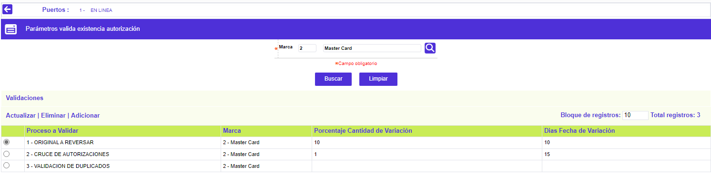
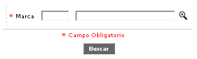
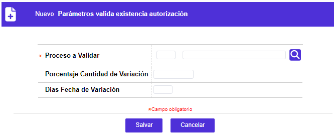
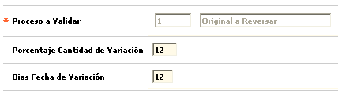
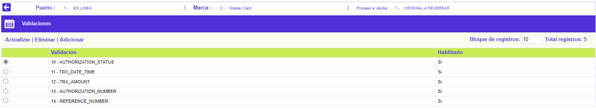
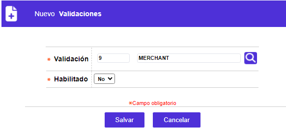
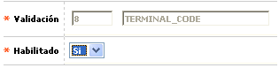

Puertos
Parámetros valida existencia autorización: Esta opción permite parametrizar, para cada uno de los procesos definidos en la opción Validación de procesos, los campos a considerar en las validaciones. También se tienen en cuenta, para cada proceso, el puerto de conexión y la franquicia a la cual se asocia el registro.
El formulario contiene las opciones Actualizar, Eliminar, y Adicionar. Adicionalmente, cuenta con la opción Validaciones y un botón en la parte superior para ir a la opción anterior: Puertos.

Filtro: Se pueden realizar consultas a través de las siguientes opciones:

|
Marca |
Campo obligatorio, en el cual se selecciona de la lista de valores la Franquicia o marca para la que se están definiendo los parámetros de validación. |
Adicionar: Si el usuario invoca la opción Adicionar se despliega un formulario con los siguientes campos:

|
Proceso a validar |
Este campo obligatorio, cuenta con lista de valores poblada a través de la opción Códigos de procesos a validar, de la cual se selecciona el proceso para el cual se definen los campos a validar. |
|
Porcentaje cantidad de variación |
Diferencia permitida, en términos porcentuales, entre el monto de la compra registrado en el comprobante y el valor de la autorización. Si no se establece el parámetro, los valores a comparar deben ser iguales. |
|
Días fecha de variación |
En este campo se define un número de días permitidos como diferencia entre la fecha de la autorización y la fecha registrada en el comprobante. Si no se establece el parámetro, las fechas que se comparan deben ser iguales. |
Actualizar: Si el usuario invoca la opción Actualizar se despliega un nuevo formulario en el cual los únicos campos modificables son:

Validaciones: En este grupo de datos se seleccionan, entre una serie de opciones posibles, los campos que se van a validar; las diferentes opciones se activan o no dependiendo de la combinación puerto – proceso a validar de cada registro, tal y como se puede apreciar en las pantallas mostradas en este documento. A continuación se describen todos los posibles campos que se despliegan:

Adicionar: Si el usuario invoca la opción Adicionar se despliega un formulario con los siguientes campos:

|
Validación |
Campo obligatorio que posee lista de valores poblada en la opción Validaciones, de la que debe seleccionarse el código de la validación a adicionar.e campo. |
|
Habilitado |
Campo que posee lista de valores tipo combo con las opciones Si / No, lo cual le indica al proceso que realiza las validaciones de si la debe tener en consideración o no. |
Actualizar: Si el usuario invoca la opción Actualizar se despliega un nuevo formulario y el único campo modificable es Habilitado.

Puertos | Validaciones por puerto | Direcciones | Límite de autorizaciones | Límite de autorizaciones ContacLess